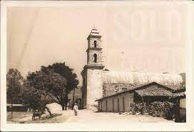

A veinte kilómetros al sur de esta ciudad se encuentra asentado el antiquísimo pueblo de Mazatlán (lugar donde hay venados; colocado a la vera de camino de Oriente, fué inicialmente una “venta” que solía haber en los viejos y polvorientos caminos del México virreinal. En este lugar que por la buena calidad de sus tierras se convirtió en un pequeña hacienda cañera, encontró la muerte el ilustrísimo señor don Feliciano de la vega, quien traía las bulas que lo designaban X arzobispo de la iglesia católica mexicana. Don Feliciano llego procedente de El Callao, Perú pero al tocar playas mexicanas, precisamente en Acapulco, lo atrapo la malaria, la cual en pocos días acabo con su existencia en Mazatlán, falleciendo el 10 de Diciembre de 1640, sepultándosele con todos los honores de su alta dignidad eclesiástica en la Población de Tixtla, en cuya iglesia estuvo enterrado por espacio de dos años, exhumándosele al cabo de ese tiempo para ser trasladado a la catedral metropolitana, en donde actualmente reposa. Fue el año de 1790 cuando el Virrey don Juan Vicente De Quemes Pacheco de Panilla Horacasitas y Aguayo, segundo conde de Revillagigedo, concedió a los pobladores de Mazatlán posesión de tierras. Este es el primer antecedentes que se tiene del fundo legal del poblado. Hacia 1890 era dueño de la pequeña hacienda de Mazatlán la familia Catalán Calvo, la cual la tuvo en posición hasta el reparto agrario en 1915, de acuerdo al ley del 6 de enero. El 19 de octubre de 1922 los ciudadanos Antonio López y Félix Bautista, en su carácter de representantes del poblado, se dirigieron al gobernador Rodolfo Neri Lacunza, solicitando la ampliación del ejido, en virtud de que muchos agricultores carecían de tierras por haber transcurridos dos años en que les fueron entregadas de manera definitiva. Para el efecto en la Comisión Local Agraria, el secretario de la misma, Ángel Tapia Alarcón, integró el expediente numero 331, con la promoción ejercida por los campesinos mazatecos, pertenecientes al municipio de Chilpancingo, distrito de Bravos.
El 17 de septiembre de 1929, esto es siete años después, el ingeniero Bernardo Arrieta levantó los trabajos técnicos de información, así como los censales de los individuos que estaban ayunos de tierras. El citado profesionista manifestó, al reunir su informe, que tales tierras solicitadas eran en su mayor parte de mala calidad, tratándose de pastizales, monte alto y solo un dos por ciento cultivables: el caserío, dijo, se encuentra ubicado a 1,500 metros sobre el nivel del mar, encontrándose en todo el minúsculo valle pequeños manantiales, por lo cual jamás han perdido las cosechas. De acuerdo al estudio técnico las tierras que resultaron afectadas fueron las de los Señores Adalberto Catalán, quien poseía una superficie de 557-74-56 hectáreas, hermanos Moctezuma poseedores de 362-88-00 hectáreas y Antonio Leyva Parra dueño de 1-427-94-00 hectáreas. Una vez cubiertas las formalidades, se integro la Junta Censal, con la representación de la Comisión Agraria Mixta dada al Ing. Arrieta, y la que confirmo el pueblo de Mazatlán al C. Desiderio Bautista, sin la de los presuntos afectados, a pesar de darles a conocer la cédula al efecto. Se llevo a cabo el censo agropecuario, arrojando un total de 221 individuos capacitados conforme a la Ley, para recibir la parcela ejidal en virtud de carecer en lo absoluto de tierras en donde satisfacer sus necesidades por ser todos ellos agricultores.
Como resultado de la notificación, el señor Antonio Leyva Parra presentó un escrito fechado el 11 de julio del corriente año, manifestando su inconformidad por la solicitud de ampliación de ejido, alegando que los terrenos señalados por los peticionarios como propiedad del señor Adalberto Catalán eran suyos, somos concesionarios de los derechos hereditarios de la única y universal heredera de la propia cesión que era Paula Leyva viuda de Moctezuma. Ante lo anterior se concedió una prorroga de 15 días para que el señor Antonio Leyva Parra presentara las pruebas conduncentes para justificar sus objeciones, pero vencido el plazo no se presento ninguna prueba, por lo cual la Comisión Local emitió un dictamen aprobatorio de la solicitud formulada por los campesinos mazatlecos. Por lo anterior el gobernador del Estado, general Adrián Castrejón , apoyados en los artículos 7 y 8 de la Ley del 6 de enero de 1915 ¡, y 73 de la Reglamentaria de la de Dotaciones y Restituciones de Tierras y aguas, resolvió que procedía la ampliación del ejido pedida por los habitantes de Mazatlán, dotándoseles de una superficie de 1,446-00-00 hectáreas afectando las propiedades de Adalberto Catalán con 257 hectáreas, a los hermanos Moctezuma con 62 y a Antonio Leyva Parra, que pudo acreditar la propiedad de 1,127 hectáreas De esa manear salieron favorecidos 221 campesinos que estaban carente de parcelas, tocándoles a cada uno de ellos 6=54=29 hectáreas per capita. A partir del 12 de noviembre de 1930 los campesinos agraciados tomaron posesión de sus respectivas tierras, según puede advertirse en el periodico oficial del gobierno del Estado, de fecha 30 de noviembre del mismo año. Esa dotación ejidal permitió a Mazatlán, con el tiempo, comercial parte de sus bosques de confieras pero, como casi siempre suele suceder, ellos fueron los menos favorecidos en la explotación forestal, siendo esa riqueza para otros como fueron Reginaldo Sánchez, José López Huerta, Agrícola Chávez y algunos mas. Este es un breve relato de cómo Mazatlán pudo conseguir sus tierras a través de los años.